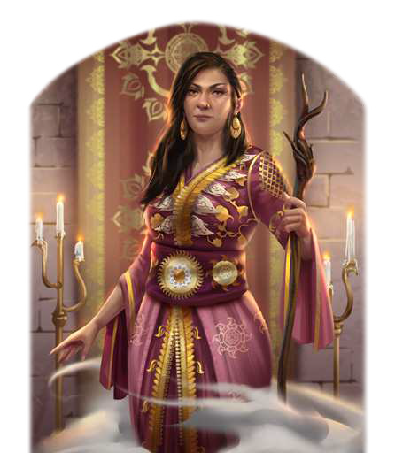

"Ihr wissensdurstigen Kinder der Einfalt! Ich habe ganz sicher nicht umsonst so viele Jahre damit verbracht, die Zauberzeichen der ehrwürdigen Mudramulim zu studieren. Solches Wissen ist überaus kostbar, seht ihr? Aber ich bin sicher, wir kommen zu einem Handel, der sich für beide Seiten lohnt."
Erst vor kurzem ist Ashtarra ihrem Vater als Leiterin der Drachenei-Akademie in Khunchom nachgefolgt, die aventurienweit für ihre magischen Artefakte bekannt ist. Als Sekretärin steht ihr die Luftdschinni Wolkenlug zur Seite, die schon Khadil Okharim freundschaftlich verbunden war. Talentiert, aber von eher zurückhaltendem Wesen, leitete Ashtarra mehrere Jahre die Analytische Fakultät und diente als Legatin der Grauen Gilde. Es überraschte viele, als schließlich sie und nicht etwa ihr älterer Bruder beim Rückzug ihres Vaters als neue Spektabilität der Akademie bestimmt wurde. Die Fußstapfen, die ihr berühmter Vorgänger hinterlassen hat, sind groß, Ashtarras Selbstbewusstsein ist mit ihren Aufgaben inzwischen jedoch deutlich gewachsen. Durch ihre langjährige Tätigkeit als Gildengesandte kennt die Magierin zudem jede Menge Geheimnisse über zahlreiche Abgänger der Akademie. Bis heute nutzt sie dieses delikate Wissen vornehmlich, um ihre persönlichen Forschungen zu Zauberzeichen voranzutreiben. Wenn ihr aber jemand einmal allzu unbequem wird, soll sie sich durchaus zu wehren wissen.
Volkes Stimme
- "Keinesfalls so weltfremd, wie man es von einer Gildenmagierin erwarten würde. Kompetent aber, und eine echte Hilfe in der Not."
- "Eine wahrhaft unnachgiebige Verhandlungspartnerin, Effendi. Erwarte nichts von ihr ohne Gegenleistung! Das muss das Blut der Okharim sein, sag ich dir."